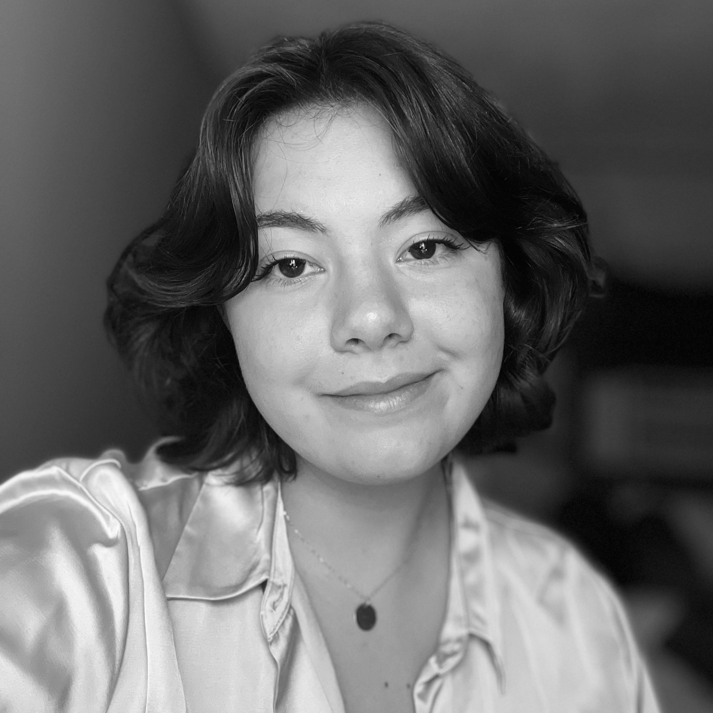

Hi, I'm Hailey!
Writer. Editor. Designer.
Whether you’re starting from scratch with a press release or need final edits on an opinion article, I’m here to help you write! I excel at crafting pieces that capture the big picture while remaining effective, concise, and engaging. Over the course of my career, I’ve helped curate a poetry section for a journal, written and edited numerous articles for publication, and completed blog posts, press releases, and interviews for book campaigns. My work aims to blend the creative and technical in a way that makes stories, or products, stand out.
On my own, I like to dabble in fiction writing and poetry that focus on mythology, nature, childhood, and LGBTQ+ experiences. When I’m not writing, you'll likely find me studying Latin, stargazing, or, most likely, bullet journaling.
Thank you so much for visiting my website. I hope you enjoy this mix of professional and personal work!
Latest Work
UMass Press
Writing and Design
Currently, I work as a Marketing Specialist for the University of Massachusetts Press. In the past, I've worked on social media campaigns, press releases, and blog posts to promote the authors of our press. Today, I continue to design ads, create campaign templates, and work on metadata for the press. Check out some of my work below!
+Read MoreEnglish Translation
I have lived by the way of the moon for as long as I have known,
holding it in my hands, my mouth, my chest.
Diana, my virgin mother, and Luna,
my faithful companion. Come with me to hunt...